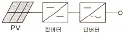
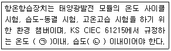
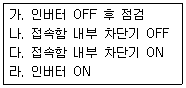
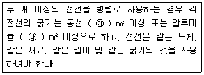

신재생에너지발전설비산업기사 (2019-03-03 기출문제)
1과목: 태양광 발전 시스템 이론
1. 옴의 법칙에서 전류에 대한 설명으로 옳은 것은?
- 저항에 반비례하고, 전압에 비례한다.
- 저항에 비례하고, 전압에 반비례한다.
- 저항에 비례하고, 전압에 비례한다
- 저항에 반비례하고, 전압에 반비례한다.
(정답률: 83%)

2. 수 개 또는 수십 개의 태양광발전 전지를 직렬로 연결하기 위해서 납땜하는 제조 공정은?
- Lay-Up 공정
- Laminator 공정
- 시뮬레이터 공정
- Tabbing & String 공정
(정답률: 77%)
3. 태양광발전 모듈에 설치하는 바이패스 소자에 대한 설명으로 틀린 것은?
- 일반적으로 모듈 뒷면의 단자함에 설치한다.
- 바이패스 소자로 대부분 다이오드를 사용한다.
- 고저항의 셀에 전류가 흘러 발열하게 되는 것을 방지 한다.
- 바이패스 소자는 태양광 발전 모듈 내의 셀과 직렬로 접속하여 사용한다.
(정답률: 72%)
4. 다음 전지중 광기전력 효과에 의해 빛에너지를 직접 변환해서 전기에너지를 얻을 수 있는 것은?
- 2차전지
- 연료전지
- 태양전지
- 인산전지
(정답률: 91%)
5. 태양광발전시스템 중 타 에너지원의 발전시스템과 결합하여 전력을 공급하는 방식은?
- 독립형
- 계통 연계형
- 건물일체형
- 하이브리드형
(정답률: 82%)
6. 전력변환장치(PCS)의 자동 운전 정지 기능에 대한 설명 중 틀린 것은?
- 해가 완전히 없어지면 운전을 정지한다.
- 흐린 날이나 비가 오는 날에는 운전을 하지 않는다.
- 태양광발전 모듈의 출력을 스스로 감시하여 자동적으로 운전한다
- 태양광발전 모듈의 출력을 얻을 수 있는 조건이 되면 자동적으로 운전을 시작한다.
(정답률: 84%)
7. 뇌서지 등에 의한 패해로부터 태양광발전시스템을 보호하기 위한 대책으로 틀린 것은?
- 뇌우 발생지역에서는 교류전원측에 내뢰 트랜스를 설치한다
- 피뢰 소자를 어레이 주회로 내에 분산시켜 설치함과 동시에 접속함에도 설치한다.
- 저압 배전선으로부터 침입하는 뇌서지에 대해서는 분전반에 피뢰 소자를 설치한다.
- 뇌서지가 내부로 침입하지 못하도록 피뢰소자를 설비 인입구에서 먼 장소에 설치 한다.
(정답률: 84%)
8. 태양광발전시스템을 계통과 연계하기 위한 인버터의 인자가 아닌것은?
- 전압
- 전류
- 위상
- 주파수
(정답률: 58%)
9. 250W 태양광발전 모듈의 가로와 세로 길이가 각각 1650mm와 960mm 일 경우 변환효율은 약 몇 % 인가? (단, STC조건을 기준으로 한다)
- 14.89
- 15.02
- 15.32
- 15.78
(정답률: 60%)
10. “임의의 폐회로에서 기전력의 총합은 저항에서 발생하는 전압강하의 총합과 같다” 는 법칙은?
- 페러데이의 법칙
- 키르히호프의 제1법칙
- 키르히호프의 제2법칙
- 플레밍의 오른손 법칙
(정답률: 74%)
11. P-N 접합에 의한 태양광발전의 진행단계가 아닌 것은?
- 광흡수
- 전하생성
- 단락전류
- 전하수집
(정답률: 85%)
12. 태양광발전 전지의 열손실 요소가 아닌 것은?
- 전도
- 대류
- 풍속
- 복사
(정답률: 81%)
13. 실효값이 220V 인 교류전압을 1.2㏀의 저항에 인가 할 경우 소비되는 전력은 약 몇 W인가?
- 14.4
- 18.3
- 26.4
- 40.3
(정답률: 57%)
14. 그림과 같은 태양광 인버터 회로 방식은?

- 트랜스 방식
- 트랜스리스 방식
- 고주파 변압기 절연방식
- 상용주파 변압기 절연방식
(정답률: 81%)
15. 수평측 풍력발전기로 분류되는 것은?
- 듀블러형
- 프로펠러형
- 다리우스형
- 사보니우스형
(정답률: 81%)
16. 인버터의 정격효율을 계산하는 식은?
- 변환효율 x 추적효율
- 변환효율 x 유로효율
- 유로효율 x 최대효율
- 추적효율 x 유로효율
(정답률: 75%)
17. 태양광발전 모듈의 뒷면 표시사항에 해당되지 않는 것은?
- 공칭질량
- 내진등급
- 공칭 단락전류
- 내풍압성의 등급
(정답률: 68%)
18. n개의 태양광발전 전지를 직병렬로 접속한 경우의 설명으로 옳은 것은?
- 태양광발전 전지를 직렬로 접속하면 전압은 n배로 높아진다.
- 태양광발전 전지를 직렬로 접속하면 전류은 n배로 높아진다.
- 태양광발전 전지를 병렬로 접속하면 전압은 n배로 높아진다.
- 태양광발전 전지를 병렬로 접속하면 전류은 변하지 않는다.
(정답률: 76%)
19. 계통연계형 태양광발전시스템 중 방재대응형 축전지 용량 산출 시 고려되는 항목이 아닌 것은?
- 보수율
- 방전시간
- 허용최대전압
- 평균방전전류
(정답률: 44%)
20. 일의 단위로 틀린 것은?
- J
- N·m
- W·s
- kgf·m/s
(정답률: 74%)
2과목: 태양광 발전 시스템 시공
21. 가공 전선로와 비교하여 지중 전선로의 장점으로 틀린 것은?
- 고장이 적다.
- 보안상의 위험이 적다.
- 공사 및 보수가 용이하다.
- 설비의 안전성에 있어서 유리하다.
(정답률: 81%)
22. 태양광발전시스템의 시공절차로 옳은 것은?
- 모듈설치 → 기초공사 → 가대설치 → 기기설치 → 배관배선 → 시운전
- 기초공사 → 가대설치 → 모듈설치 → 기기설치 → 배관배선 → 시운전
- 모듈설치 → 가대설치 → 기초공사 → 배관배선 → 기기설치 → 시운전
- 기초공사 → 모듈설치 → 배관배선 → 가대설치 → 기기설치 → 시운전
(정답률: 82%)
23. 감리보고와 관련하여 분기보고서는 누가 작성하여 누구에게 제출 보고하여야 하는가?
- 공사업자가 작성하여 발주자에게 제출
- 책임감리원이 작성하여 발주자에게 제출
- 공사업자가 작성하여 감리업자에게 제출
- 책임감리원이 작성하여 감리업자에게 제출
(정답률: 79%)
24. 금속관의 굵기는 전선의 피복절연물을 포함한 단면적의 총합계가 관내 단면적의 최대 몇 % 이하가 되어야 하는가? (단, 동일 굵기의 절연전선을 동일 관내에 넣는 경우이다)
- 32
- 40
- 48
- 52
(정답률: 65%)
25. 전압 동요에 의한 플리커의 경감대책으로 전력 공급측에 실시하는 대책으로 틀린 것은?
- 공급 전압을 승압한다.
- 전용 계통으로 공급한다.
- 전용 변압기로 공급한다.
- 단락용량이 적은 계통에서 공급한다.
(정답률: 65%)
26. 태양광발전 어레이의 출력이 500 W이하일 때 접지선의 굵기는 몇 mm2 인가?
- 1
- 1.5
- 2
- 2.5
(정답률: 45%)
27. 태양광발전시스템의 지지대 부속자재의 설치 시 고려사항으로 틀린 것은?
- 건축물의 방수 등에 문제가 없도록 설치한다.
- 볼트 조립은 헐거움이 없이 단단히 조립한다.
- 바람, 적설하중 및 구조하중은 고려하지 않고 설치한다.
- 모듈지지애의 고정 볼트에는 스프링 와셔 또는 풀림방지너트 등으로 체결한다.
(정답률: 89%)
28. 특고압 또는 고압을 저압으로 강압하는 변압기의 저압측 전로에 실시하는 접지공사로 옳은 것은?
- 제1종 접지공사
- 제2종 접지공사
- 제3종 접지공사
- 특별 제3종 접지공사
(정답률: 45%)
29. 태양광발전시스템 시공 시 필요한 대형장비에 해당하지 않는 것은?
- 굴삭기
- 지게차
- 컴프레서
- 크레인
(정답률: 88%)
30. 공사업자가 감리원에게 제출하는 착공신고서류에 포함되지 않는 것은?
- 공사 준공 사진
- 품질 관리 계획서
- 안전관리 계획서
- 공사 예정공정표
(정답률: 73%)
31. 태양광발전 모듈 출력전압이 500 V 일 경우 인버터 외함에 시설하여야 하는 접지공사는?
- 제1종 접지공사
- 제2종 접지공사
- 제3종 접지공사
- 특별 제3종 접지공사
(정답률: 61%)
32. 태양광발전시스템의 사용전 검사 시 태양광발전 전지 검사중 전지 전기적 특성시험이 아닌 것은?
- 충진율
- 개방전압
- 단독 운전방지 시험
- 최대 출력전압 및 전류
(정답률: 54%)
33. 계통연계형 태양광 발전의 송 변전설비 중 저압에서 사용되는 차단기는?
- 진공차단기
- 기중차단기
- 공기차단기
- 유입차단기
(정답률: 58%)
34. 태양광발전시스템 시공 완료 후 검사에 필요하지 않은 장비는?
- 절연저항계
- 모듈테스터
- 디지털멀티미터
- 레이저거리측정기
(정답률: 81%)
35. 전력계통의 무효전력을 조정하여 전압조정 및 전력손실의 경감을 도모하기 위한 설비는?
- 조상설비
- 보호계전장치
- 계기용 변성기
- 부하시 Tap 절환장치
(정답률: 79%)
36. 설계감리원이 설계도면의 적정성을 검토할 때 확인사항으로 틀린 것은?
- 도면상에 사업명을 부여 했는지 여부
- 설계입력 자료가 도면에 맞게 표시되었는지 여부
- 도면작성이 의도하는 대로 경제성, 정확성 및 적정성 등을 가졌는지 여부
- 발주자 및 설계자가 설계수행을 위하여 요청하는 사항이 표시되었는지 여부
(정답률: 56%)
37. 태양광발전시스템의 공사감리의 법적 근거는?
- 전기사업버
- 전기공사업법
- 전력기술관리법
- 전기설비기술기준
(정답률: 56%)
38. 태양광발전시스템 구성기기 간의 배선공사가 아닌 것은?
- 태양광발전 모듈 간의 배선
- 접속함과 인버터 간의 배선
- 태양광발전 전지 간의 배선
- 태양광발전 어레이와 접속함 간의 배선
(정답률: 67%)
39. 태양광발전시스템에 적용하는 피뢰방식이 아닌 것은?
- 접지방식
- 돌침방식
- 수평도체방식
- 메시도체방식
(정답률: 63%)
40. 태양광발전 모듈과 인버터, 인버터와 계통연계점 간의 전압강하는 각 최저 몇 %를 초과하지 않아야 하는가?
- 3
- 5
- 7
- 8
(정답률: 67%)
3과목: 태양광 발전 시스템 운영
41. 태양광발전 모듈의 고장 원인이 아닌 것은?
- 제조결함
- 시공불량
- 동결파손
- 새의 배설물
(정답률: 67%)
42. 태양광발전시스템의 일상점검 점검항목이 아닌 것은?
- 인버터 – 통풍 확인
- 접속함 – 절연저항 측정
- 인버터 – 표시부의 이상표시
- 태양광발전 모듈 – 표면의 오염 및 파손
(정답률: 77%)
43. 성능평가 측정 중 시엄 장치에 관한 설명이다. ( )안의 ㉠, ㉡에 들어갈 내용으로 옳은 것은?

- ㉠±2 ℃, ㉡±2 %
- ㉠±5 ℃, ㉡±2 %
- ㉠±2 ℃, ㉡±5 %
- ㉠±5 ℃, ㉡±5 %
(정답률: 62%)
44. 정전을 시켜놓고 무 전압 상태에서 기기의 이상(異常) 상태를 점검하고, 필요한 경우 기기를 분리하여 점검을 수행해야 하는 점검은?
- 일상점검
- 임시점검
- 정기점검
- 최종점검
(정답률: 79%)
45. 태양광발전시스템에서 발전하지 못하거나 발전한 전력이 부하공급에 부족할 경우, 계통으로부터 부족한 전력 공급 유무를 확인할 수 있는 시험은?
- 단독운전 방지시험
- 제어회로 경보장치
- 역방량운전 제어시험
- 전력변환장치 자동 수동 절체시험
(정답률: 59%)
46. 태양광발전시스템 접속함에 DC 500 V 메거로 측정 시 태양광발전 전지와 접지 간 최소 절연저항 값은?
- 0.1 ㏁
- 0.2 ㏁
- 0.4 ㏁
- 0.5 ㏁
(정답률: 54%)
47. 발전소 허가기준에 포함되지 않는 것은?
- 전기사업이 계획대로 수행될 수 있을 것.
- 발전소가 해당지역에 집중되어 전력계통의 운영이 용이할 것.
- 전기사업을 적정하게 수행하는 데 필요한 재무능력 및 기술능력이 있을 것.
- 구역전기사업의 경우 특정한 공급구역 전력수요의 50퍼센트 이상으로서 대통령령으로 정하는 공급능 력을 갖출 것.
(정답률: 65%)
48. 일상점검을 할 때 볼트 조임 방법이 틀린 것은?
- 조임은 너트를 돌려서 조여 준다.
- 조임은 지정된 재료, 부품을 정확히 사용 한다.
- 2개 이사의 볼트를 사용하는 경우 한쪽만 심하게 조이지 않도록 주위한다.
- 볼트의 크기에 맞는 파이프렌치를 사용하여 규정된 힘으로 조여 준다.
(정답률: 70%)
49. 태양광발전 전지의 개방전압의 측정과 관련하여 틀린 것은?
- 교류 전압계를 사용하여 측정한다.
- 각 스트링의 P-N 단자 간의 전압을 측정한다.
- 각 모듈이 그림자에 의해 영향을 받지 않는 상황에서 측정한다.
- 측정하고사 하는 스트링의 MCCB 또는 퓨즈를 개방(off)한 상태에서 측정한다.
(정답률: 67%)
50. 태양광발전시스템이 작동되지 않는 경우 응급조치 순서는?

- 가 → 나 → 다 → 라
- 나 → 가 → 라 → 다
- 다 → 가 → 라 → 나
- 라 → 가 → 나 → 다
(정답률: 78%)
51. 태양광전지(KS C 8566:2015)에서 솔라시물레이터 측정용 분광 복사계의 파장 간격은 몇 nm 이하이어야 하는가?
- 3
- 5
- 7
- 10
(정답률: 49%)
52. 태양광발전시스템의 계측 표시에 관한 설명으로 틀린 것은?
- 시스템의 소비전력을 낮추기 위한 계측
- 시스템에 의한 발전 전력량을 알기 위한 계측
- 시스템의 운전상태 감시를 위한 계측 또는 표시
- 시스템의 기기 및 시스템의 종합평가를 위한 계측
(정답률: 76%)
53. 결정질 실리콘 태양광 발전 모듈 (성능) (KS C 8561:2016)에서 최대 출력 결정 시험의 품질기준으로 틀린 것은?
- 시험시료의 출력균일도는 평균출력의 ±3% 이내일 것
- 시험시료의 최종 환경 시험 후 최대 출력의 열화는 최초 출력의 –8%를 초과하지 않을 것
- 해당 태양광발전 모듈의 최대 출력을 측정하되, 시험시료의 평균 출력은 정격 출력 이상일 것
- 최대 시스템 전압의 두 배에 1000V를 더한 것과 같은 전압을 최대 500V/s 이하의 상승률로 태양전지 모듈의 출력단자와 패널 또는 접지단자(프레임)에 1분간 유지할 것
(정답률: 64%)
54. 태양광발전시스템 계측에 관한 설명 중 틀린 것은?
- 풍향 풍속 등도 중요하므로 이에 대한 계측도 필요하다
- 직류회로의 전압은 직접 또는 PT, CT를 통해서 검출한다
- 태양광발전 전지는 온도에 따라 변환효율이 변동되므로 온도 계측도 이루어진다
- 일사계는 보통 대지에 수평으로 설치되나 어레이와 같은 각도로 설치하는 경우도 있다.
(정답률: 58%)
55. 태양광발전설비 운영 매뉴얼 내용으로 틀린 것은?
- 황사나 먼지 등에 의해 발전효율이 저하된다.
- 풍압에 의해 모듈과 형강의 체결부위가 느슨해질 수 있다
- 모듈 표면은 강화유리로 제작되어 외부충격에 파손되지 않는다
- 고압 분사기를 이용하여 모듈 표면에 정기정으로 물을 뿌려 이물질을 제거해 준다
(정답률: 82%)
56. 태양광발전시스템에 사용되는 인버터 중 계통연계형 인버터의 시험항목이 아닌 것은?
- 부하 불평형 시험
- 입력 전압 급변 시험
- 최대 전압 추종 시험
- 출력 전류 직류준 검출 시험
(정답률: 55%)
57. 의무안전인증이 필요한 보호구가 아닌 것은?
- 안전모
- 안전화
- 안전대
- 안전장갑
(정답률: 57%)
58. 전기안전관리자의 직무에 의거하여 태양광발전시스템 전기안전관리를 수행하기 위하여 계측장비를 주기적으로 교정하고 안전장구의 성능을 유지하여야 한다. 권장교정 및 시험 주기가 틀린 것은?
- 저압검전기 - 1년
- 절연안전모 - 2년
- 고압절연장갑 - 1년
- 고압 · 특고압 검전기 - 1년
(정답률: 72%)
59. 태양광발전시스템의 성능평가를 위한 사이트 평가방법으로 틀린 것은?
- 설치용량
- 설치각고와 방위
- 설치시설의 지역
- 설치지역의 기후
(정답률: 46%)
60. 고압 활선작업 시의 안전조치사항이 아닌 것은?
- 절연용보로구 착용
- 절연용 방호구 설치
- 단락접지기구의 철거
- 활선작업용 기수 사용
(정답률: 82%)
4과목: 신재생 에너지 관련 법규
61. 신에너지 및 재생에너지 개발 · 이용 · 보급 촉진법에 의거하여 산업통상자원부장관은 몇 년마다 신 · 재생에너지 관련 기술 개발의 수준 등을 고려하여 연도별 의무공급량의 비율을 재검토하여야 하는가?
- 1년
- 2년
- 3년
- 4년
(정답률: 55%)
62. 신에너지 및 재생에너지 개발 · 이용 · 보급 촉진법에 의거하여 산업통상자원부장관이 정하여 고시하는 신 · 재생에너지의 가중치의 산정 시 고려 사항으로 틀린 것은?
- 전력 판매가
- 지역주민의 수용 정도
- 전력 수급의 안정에 미치는 영향
- 온실가스 배출 저감에 미치는 영향
(정답률: 70%)
63. 저탄소 녹생성장 기본법에 의서 저탄소 녹색성장대책을 수립 · 시행할 때 지역적 특성과 여건을 고려하여야 하는 기관은?
- 품질검사기관
- 공급인증기관
- 지방자치단체
- 신 · 재생에너지센터
(정답률: 67%)
64. 최대 사용전압이 22.9kV인 중성선 접지식 가공전선로는 약 몇 V 의 절연내력 시험전압에 견지어야 하는가?
- 16488
- 21068
- 28625
- 34350
(정답률: 69%)
65. 전기설비기술기준의 의거하여 발전용 출력설비 중 풍력터빈의 구조에 대한 설명으로 틀린 것은?
- 분진 등에 의한 손모를 고려할 것
- 태양광에 대하여 구조상 안전할 것
- 운전 중 풍력터빈에 손상을 주는 진동이 없도록 할 것
- 부하를 차단하였을 때어데 최대속도에 대하여 구조상 안전할 것
(정답률: 70%)
66. 신에너지 및 재생에너지 개발 · 이용 · 보급 촉진법에 의거 산업통상자원부장관이 청문을 통하여 내리는 처분으로 옳은 것은?
- 건축물 인증 취소
- 발전설비의 지정 취소
- 송전설비의 지정 취소
- 공급인증기관의 지정 취소
(정답률: 67%)
67. 신에너지 및 재생에너지 개발 · 이용 · 보급 촉진법에 의거 신재생에너지 공급 의무자에 해당하지 않는 것은?
- 한국석유공사
- 한국수자원공사
- 한국지역난방공사
- 50만 kW 이상의 발전설비(신 · 재생에너지 설비는 제외한단)를 보유하는 자
(정답률: 76%)
68. 전기설비기술기준의 판단기준에 의거하여 ( ) 안의 ㉮, ㉯에 들어갈 내용으로 옳은 것은?

- ㉮ 25, ㉯ 35
- ㉮ 35, ㉯ 50
- ㉮ 50, ㉯ 70
- ㉮ 70, ㉯ 100
(정답률: 61%)
69. 전기설비기술기준의 판단기준에 의거하여 이차전지를 이용한 전기저장장치 시설에 대한 설명으로 틀린 것은?
- 침수의 우려가 없는 곳에 시설할 것
- 이차전지를 시설하는 장소는 보수점검을 위한 최소한의 작업공간을 확보하고 조명설비를 시설할 것
- 이차전지를 시설하는 장소는 촉발성 가스의 축척을 방지하기 위한 환기시설을 갖추고 적정한 온도와 습도를 유지할 것
- 이차전지의 지지물은 부식성 가스 또는 용액에 의하여 부식되지 아니하도록 하고 적재하중 또는 지진 등 기타 진동과 충격에 대하여 안전한 구조일 것
(정답률: 71%)
70. 전기설비기술기준의 판단기준에 의거한 전기부식방지 시설의 시설 기준으로 틀린 것은?
- 회로의 사용전안 직류 30 V 이하 일 것
- 지중에 매설하는 양극의 매설깊이는 75㎝ 이상일 것
- 전기부식방지용 전원장치에 전기를 공급하는 전로의 사용전압은 저압일 것
- 전선을 직접 매설식에 의하여 시설하는 경우에는 전선을 피방식체의 아랫면에 밀착하여 시설하는 경우 이외에는 매설깊이를 차량 기타의 중량물의 압력을 받을 우려가 있는 곳에서는 1.2 m 이상 일 것
(정답률: 57%)
71. 저탄소 녹색성장 기본법에서 정한 온실가스의 종류가 아닌 것은?
- 메탄
- 질소
- 아산화질소
- 수소불화탄소
(정답률: 77%)
72. 전기설비기술기준의 판단기준에서 정의하는 “리플프리직류”는 교류를 직류로 변환할 때 리플성분이 몇 % (실효값) 이하 포함한 직류를 말하는가?
- 10
- 15
- 20
- 25
(정답률: 57%)
73. 전기사업법에서 정의하는 “전기사업”의 구분으로 틀린 것은?
- 발전사업
- 송전사업
- 변전사업
- 구역전기사업
(정답률: 61%)
74. 국가기관, 지방자치단체, 공공기관, 그 밖에 대통령령으로 정하는 자가 신 · 재생에너지 기술개발 및 이용 · 보급에 관한 계획을 수립 · 시행하려면 대통령령으로 정하는 바에 따라 미리 누구와 협의를 하여야 하는가?
- 시 · 도지사
- 국가기술표준원장
- 한국전력공사사장
- 산업통상자원부장관
(정답률: 74%)
75. 전기설비기술기준의 판단기준에 의거하여 고압 옥측전선로의 전선으로 사용할 수 있는 것은?
- 케이블
- 나경동선
- 절연전선
- 다심형 전선
(정답률: 69%)
76. 전기사업법에서 전력수급의 안정을 위하여 전력수습기본계획을 수립하는 자는?
- 대통령
- 구청장
- 시 · 도지사
- 산업통상자원부장관
(정답률: 75%)
77. 직류 750 V 이하, 교류 600 V 이하의 전압을 무엇이라 하는가?
- 저압
- 고압
- 특고압
- 초고압
(정답률: 74%)
78. 전기사업법에서 대통령으로 정하는 기본계획의 경미한 사항을 변경하는 경우 중 전기설비별 용량의 몇 %의 범위에서 그 용량을 변경하는 경우를 말하는가?
- 20
- 25
- 30
- 35
(정답률: 69%)
79. 신에너지 및 재생에너지 개발 · 이용 · 보급 촉진법에 따른 산업통상자원부장관의 권한을 그 일부를 대통령령으로 정하는 바에 따라 위임할 수 있다. 위임받을 수 있는 자가 아닌 것은?
- 특별시장
- 소속 기관의 장
- 특별자치도지사
- 신 · 재생에너지 발전사업자
(정답률: 76%)
80. 전기설비기술기준의 판단기준에 의거 저압연접 인입선의 시설에 대한 설명으로 틀린 것은?
- 옥내를 통과하지 아니할 것
- 폭 5m을 초과하는 도로를 횡단하지 아니할 것
- 전선의 높이는 도로를 횡단하는 경우 노면상 2.5m 이상일 것
- 인입선에서 분기하는 점으로부터 100m을 초과하는 지역에 미치지 아니할 것
(정답률: 65%)